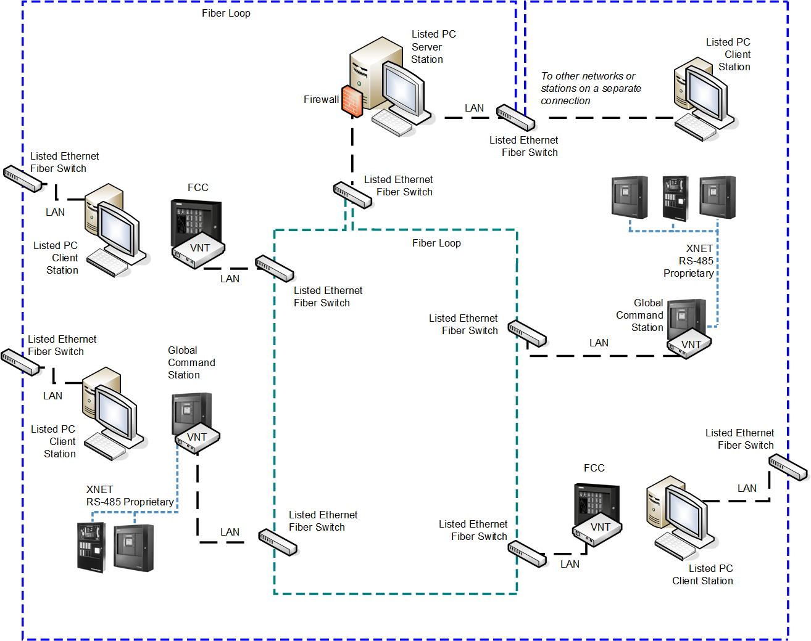

VNT Connection Security
In GCNET/VNT networks, to ensure a secure solution, it is recommended that Desigo CC stations as well as other field connections are installed on separate networks other than the VNT network. All Desigo CC stations connected to the VNT network must be protected by a firewall, for example Windows Firewall.
The following ports should be left open:
- TCP ports 22 and 2000 - VNT communication
- UDP port 161 (default) - Ethernet switch monitoring via SNMP
NOTE: Refer to the SNMP configuration page to check the possible customization of the SNMP port.
NOTICE

These security recommendations apply to all schematics presented in the XNET Fire System Architectures section.
